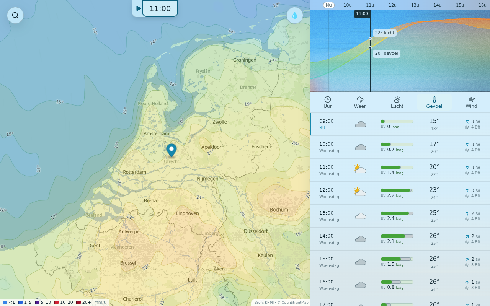
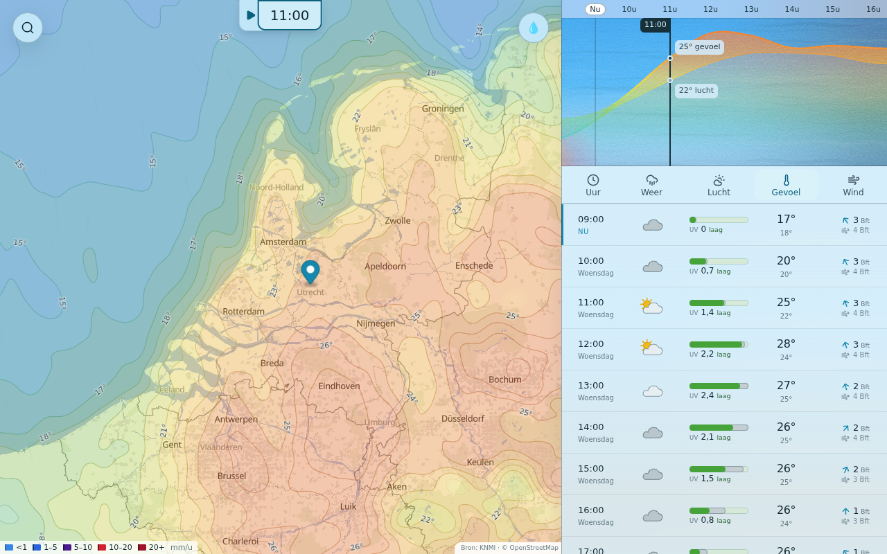
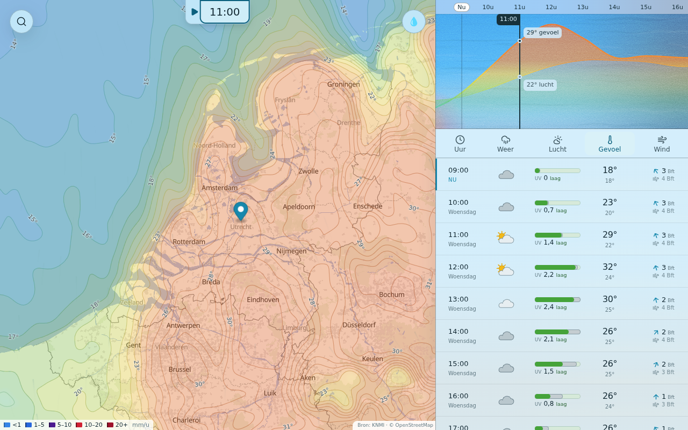

HARMONIE uit het dev-archief (snapshot 2026-09-30T07:10:00Z); desktop 1280 × 800; de kaart staat op het moment, de tabel begint bij het snapshot-nu. nu = MIP-10 (ingest), zon = MIP-41-kalibratie, zon-sterk = dubbele Q.


